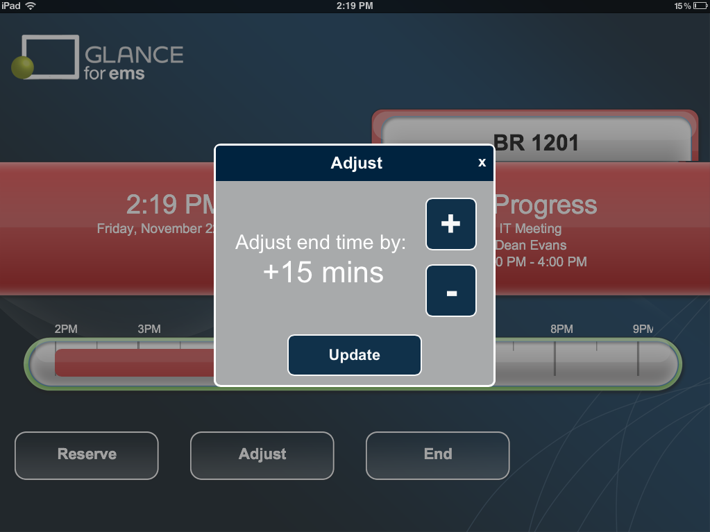

Concept: You can set how information displays at the Global level (defaults for all Profiles) or for just one Profile.

|
Option |
Description |
|---|---|
|
Indicates if a meeting can be adjusted or ended. If set to Yes, then Adjust and End buttons are displayed on the In Progress screen. Adjust - If you click Adjust, then an Adjust popup opens. You use the options on this popup to adjust the booking end time based on the number of minutes specified (in 15 minute increments.) Positive values extend the booking end time. Negative values shorten the booking end time. End - Sets the booking end time to the current time. See the In Progress screen with Adjust and End buttons. Note: Currently, EMS Glance supports editing for meetings without setup or teardown time(s) that are in In Progress only. |
In Progress screen with Adjust and End buttons

Adjust popup
